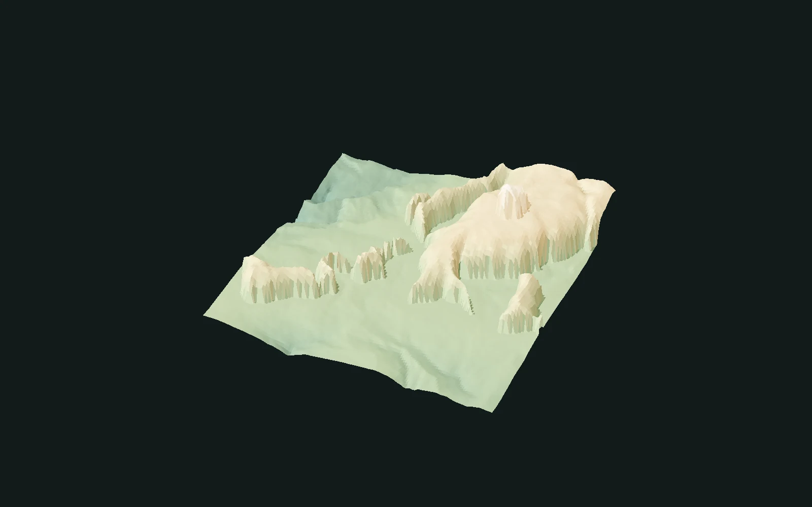

搜索结果

01 / 效果研究
同一个过程，不同的表达。
从连续山坡，到有节奏的层状岩石。
连续山脊
层叠岩台
12 terraces · Steepness 0.85 · Uniformity 1.0由已有求值样本渲染，同组画面共用相机、显示起伏、灯光和颜色范围；原始样本值保持不变。 效果示例与数值用例使用各自明确的参数配方。图片展示功能效果，结果摘要记录数值对照。
换一个角度，看看形态。
512²已求值结果的相机环绕展示，不是实时生成、侵蚀演化或性能录屏。
02 / 技术记录
验证记录
有日期与范围的验证快照 · 2026-10-16
- 固定用例
- 30
- 数值验证分辨率
- 64² / 128²
- 绝对误差门槛
- 2.0000e-6
- 观察到的最大误差
- 1.8924e-6
03 / 验证范围
这份记录说明什么
- 完整保留五个原参数。
- 30组完整Graph固定用例覆盖64²与128²；512²静帧是效果展示，不作为新增数值验收。
- 保留10月16日的历史验证，建立网页没有重跑或扩展GPU／Unreal验收。